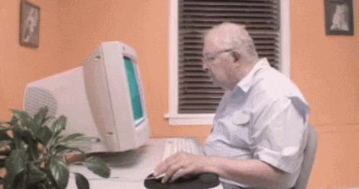

As a lover of poetry, I was deeply moved by this website. Poetry is often perceived on paper, not through an online source. Before I read this article, I looked through the listed links “Library of Practical and Conceptual Resources” and “View Laurel’s Are.na channel” to gain more insight on what this article would be about. My favorite was looking at the Are.na channel and seeing the images of the sparrows with their speech bubbles; it brought a much needed smile to my face. Something so silly yet poetic is something I want to urge myself to create, I just have to get past my strict professional creative side.
At the beginning of the reading, the question that the author said her students asked, “so how do I actually make a website?” really stood out to me. Handmade and personal websites are still websites, but on a smaller scale than the much larger, corporate websites that we notably see every day. I do also enjoy the author’s take on modern websites and social media impacts on the human condition. The internet can be such an overwhelming place, especially with how quickly information is uploaded and accessible. There is so much attention focused online, especially as technology has advanced that social media causes discomfort, since there is so much attention on a single person.
Further into the article are the images of sparrows with the speech bubbles, which again brought me great joy to read. I got to the section, “website as garden” and that really spoke to me, as someone who truly enjoys nature and all it has to offer. Digital media is rather contradictory to nature, but thinking of a website as your own personal garden is something that inspires me for creating my webpages in the future. Especially with the saying of people tending to their mental health as if it is a garden intisde of their head, I feel that the same applies to their own personal websites.

I really enjoyed more of the emphasis on websites created by a person for a person, and not a corporation. It sparks individuality and uniqueness within an individual and how they express themselves on the world wide web. The words “bright, rich, slow and underconstruction” particularly stood out to me since when I think of a website, I tend to think of fast, organized, perfected, dull, professional, and so much more.
Additionally, I really enjoy how the author of this reading related handmade websites to printed design works. It further solidified the point that even if these are digital, they still hold just as much value as any printed work. This bled into their first web-based work called “Fishes & Flying Things” which was meant to portray a circular story instead of having the audience read the message and move on. I really enjoyed taking time and browsing through this web page as the graphics are of a similar style to the type of art I tend to enjoy and inspired me to look into this type of web design more.
One last thing I enjoyed about this reading was using web design as an influential platform and also as an archive. I am currently on my own archive journey inspired by another archive from the 1960s-1970s and have been wanting to upload my personal research and journey online. The trAce Online Writing Centre was that little sliver that also allowed me to know that I can do as I please with my own handmade web and hopefully it could become influential as this authors website.
I was super overwhelmed upon opening this site, as I was going into it looking for a reating and finding tabs where I don't know what I am supposed to be doing or looking at. I noticed a chat that kept popping through with messages, one of which said "BONG" and got a chuckle out of me, but made me more curious about how to tackle this website.
I think the point of this reading was made abundantly clear upon the complexity of how the content appeared and I agree with the messaging behind it all. #6, Hangout At Work hit home for me as someone who grew up in an environment where overkworking yourself was praised, even if you weren't always rewarded for it. It is a balance I am still attempting to find with my work and my mental health, and I appreciate that the article highlighted that as a struggle people go through/that companies project onto thier workers.
This reading made me #anxious. Especially as someone who focuses a lot of her work on the natural world. the article talked about how studies have basically found that humanity is destroying the planet. This is why I want to focus in what I focus in, to try and prevent things like this from happening and share resources that either help prevent the damages/try to repair it or lessen the damages in comparison to other resources. I enjoyed the section that acknowledged the issue of American consumerism, as that has become a major issue within our unfortunate mess of a country.
It is scary how fast the internet has come into existance and evolved at the same time. I think that is because I am viewing that evolutiin through a biological lense, where it takes years for biology to evolve, meanwhile this artificial machine has expanded so much faster. As a kid, my parents did as much as they could to shield me from the internet, keeping me away from screens and enjoying books and playing outside, it was a freedom I still chase even though my existance is now tied to a screen for my career in graphic design.
The internet is overwhelming. It it a place of kindness, hostility, competiton, and so much more. Modern aesthetics of simplicity reflect the chaos, as humans choosing a calmer way to address the chaos. Humans, however, NEED chaos. Look back at Art Nouveau. Linework had variations in density, there was color, human nudity and culture, nature, and so much more! What happened?! Beauty has been replaced by unregulated chaos, and this article highlights that fact deeply.